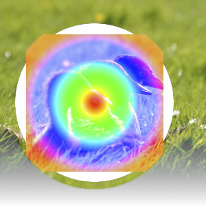
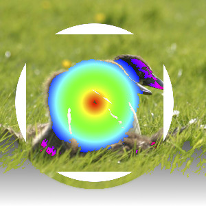

O grupo “Clarear” contém modos de camada que deixam o resultado mais claro.
- Somente clarear
-
Figura 8.14. Exemplo para modo de camadas “Somente clarear”

Exemplo para modo de camadas “Somente clarear”
O modo compara cada componente de cada pixel na camada superior com o correspondente na camada inferior e utiliza o valor maior na imagem resultante. Camadas completamente pretas não têm efeito sobre a imagem final e camadas completamente brancas resultam em uma imagem branca.
Este modo é comutativo; não importa a ordem das duas camadas.
- Somente clarear
-
Figura 8.15. Exemplo para modo de camadas “Somente clarear”

Camada superior em 100% de opacidade usando o modo “Apenas Clarear Luma/Luminância”.
O modo compara cada componente de cada pixel na camada superior com o correspondente na camada inferior e utiliza o valor maior na imagem resultante. Camadas completamente pretas não têm efeito sobre a imagem final e camadas completamente brancas resultam em uma imagem branca.
Este modo é comutativo; não importa a ordem das duas camadas.
- Esconder
-
O modo Esconder inverte os valores de cada um dos pixels visíveis nas duas camadas da imagem. (Isto é, ela subtrai cada componente deles de 255). Em seguida, ele os multiplica entre si, divide por 255 e inverte este valor novamente. A imagem resultante é geralmente mais brilhante, e às vezes de aparência “lavada”. As exceções a isto são as camadas em preto, o que não altera a outra camada, e uma camada em branco, o que resulta em uma imagem branca. Cores mais escuras na imagem aparentam ser transparentes.
Este modo é comutativo; não importa a ordem das duas camadas.
- Sub-exposição
-
Figura 8.17. Exemplo para o modo de camada “Sub-exposição”

Camada superior em 100% de opacidade usando o modo “Dodging”.
O modo Sub-exposição multiplica o valor do pixel da camada inferior por 256, que então divide pelo inverso do valor do pixel da camada superior. A imagem resultante é geralmente mais clara, mas algumas cores podem ser invertidas.
Na fotografia, a sub-exposição é uma técnica usada em uma câmara escura para diminuir a exposição em áreas específicas da imagem. Isso traz a tona detalhes as sombras. Quando utilizado para este fim, o modo Sub-exposição pode trabalhar melhor em imagens em tons de cinza e com uma ferramenta de pintura, em vez de um modo de camada.
- Adição
-
O modo Adicionar é muito simples. Os valores de pixel da camadas superior e inferior são adicionados uns aos outros. A imagem resultante é geralmente mais clara. A equação pode resultar em valores de cores maiores que 255, portanto, algumas das cores claras podem ser ajustadas para o valor máximo de 255.
Este modo é comutativo; não importa a ordem das duas camadas.